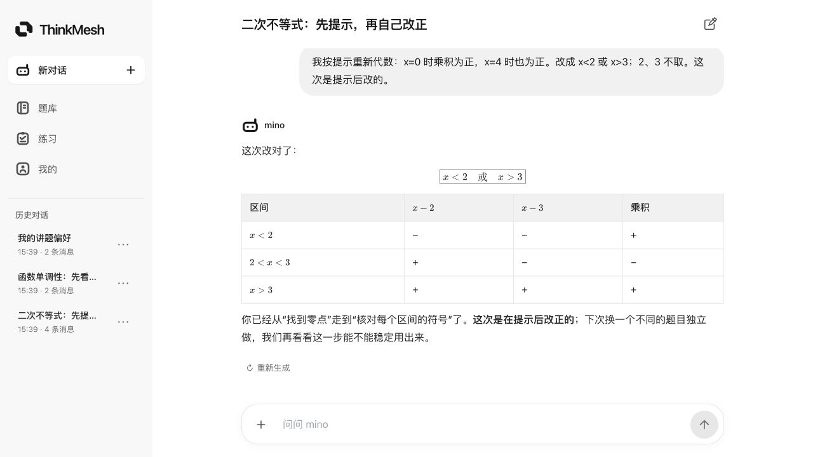
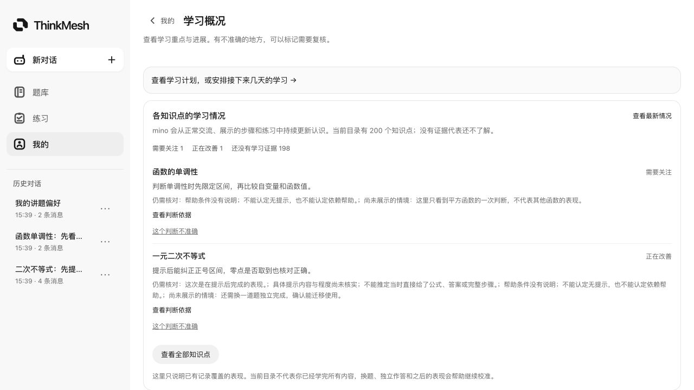
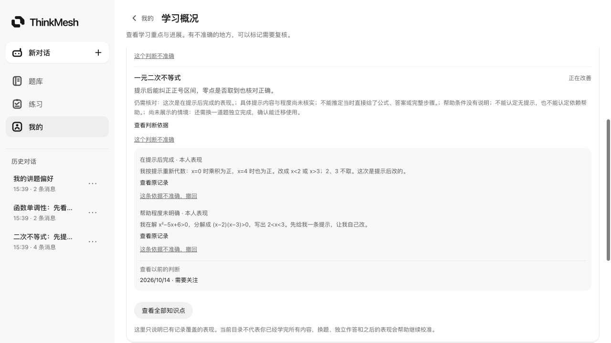
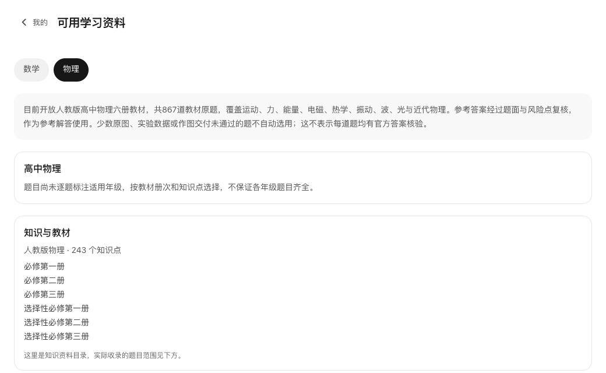

A LEARNING PARTNER THAT GROWS WITH YOU
下一道题，
从更了解你开始。
先体验一次自然交流。看看 mino 怎样核对你的思路，
又怎样把这些表现用于之后的学习。
面向高中数学与物理的 AI 学习伙伴
和 mino 聊聊你卡住的那一步。
让每一次尝试、提示和改正，成为下一次学习的依据。
自然交流 · 读题讲题 · 练习复盘 · 持续学情

LEARN IN YOUR OWN WAY
拍下一道题，写出一段思路，或者直接问“为什么”。
从你当前的问题和已有步骤开始。
截图来自真实应用界面；学生对话、记录与学情使用固定演示数据。
EVERY ATTEMPT COUNTS
求助、实际作答、提示后完成和独立完成，含义不同。
mino 根据有来源的表现，持续校准相关知识点的认识。
数学与物理分别组织。没有证据、证据过旧和需要重新核对的情况如实呈现，不编造掌握百分比。

查看学生原话、帮助程度和历史判断。来源看错了，可以纠正或撤回，让相关认识重新评估。

PRACTICE WITH PURPOSE
从已有教材题、考试真题和个人题库中选题。
提交作答，批改复盘，中断后也能继续。
截至 2026 年 10 月 14 日的已发布资源范围。目录不代表学生已经掌握；部分参考答案仍待核验。

A LEARNING PARTNER THAT GROWS WITH YOU
先体验一次自然交流。看看 mino 怎样核对你的思路，
又怎样把这些表现用于之后的学习。